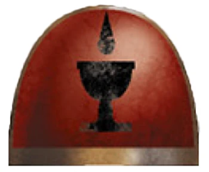

Blood Drinkers
| Blood Drinkers | |
|---|---|
| Space Marine Chapter of the Adeptus Astartes | |
 Badge of the Blood Drinkers: the chalice and the drop Artwork © Games Workshop | |
| Founding | Second Founding, early 31st Millennium |
| Successor of | Blood Angels |
| Primarch | Sanguinius |
| Chapter Master | Orloc |
| Homeworld | San Guisiga |
| Allegiance | Imperium of Mankind |
| Colours | Red with gold trim |
| Notable events | |
| Quest of Holos on Mount Calicium (37th millennium); Cleansing of the Death of Integrity (887.M39); defence of Baal (999.M41) | |
The Blood Drinkers are a Loyalist Space Marine Chapter and a Second Founding Successor of the Blood Angels. Their name comes from a craving for blood. This craving is a result of a mutated Omophagea organ in their gene-seed. Despite this name, the Chapter has an exemplary record and is widely considered one of the most honourable Chapters of the Adeptus Astartes.[1]
The Blood Drinkers keep close company with other Chapters regarded as beyond reproach, among them the Crimson Fists, the Novamarines and the Howling Griffons. Their Chapter Master, Orloc, fought beside his battle-brothers in the defence of the Blood Angels' homeworld of Baal against the forces of Chaos and the Tyranids in 999.M41.[1]
Rites and the Flaw
[edit]What sets the Blood Drinkers apart is their willingness to take part in rites that involve the drinking of blood, sometimes in great quantities of Human blood. They do not hide this tradition from the Imperium at large. They practise it openly through ceremonies such as the ''Sanguis Excrucio'' and the Red Tears.[1]
Many Imperial observers wonder whether these rites are the cause of the Chapter's resistance to the Red Thirst and the Black Rage. A smaller share of its battle-brothers succumb to the Black Rage than in other Blood Angels descendants. The Chapter's acceptance of its nature seems to have given it a unique degree of control over the Flaw, but it remains to be seen whether that control comes without a greater cost.[1][a]
Unlike the other Successors of the Blood Angels, the Blood Drinkers follow the ''Codex Astartes'' strictly and are organised accordingly. They still keep a Death Company, but far fewer of their battle-brothers fall to the Black Rage.[1]
History
[edit]The Blood Drinkers were founded in the early 31st Millennium, after the Horus Heresy. They were raised as a Second Founding Chapter before the truth about the flawed gene-seed of their progenitors came to light. Like their brother Successors, they are bound to the Blood Angels by the blood of Sanguinius, which flows through their veins, and by ancient traditions that outsiders find hard to understand.[1][b]
By the 37th millennium the Blood Drinkers were a dying Chapter, as battle-brothers succumbed to the Black Rage as soon as they were fully initiated. The hero-saint Holos left against the will of the Chapter Council to search for a cure. Following a dream, and the secret counsel of his Reclusiarch Shanadar, Holos climbed Mount Calicium, the highest volcanic peak on San Guisiga. On the way he fought Lo-tan, lord of the astorgai, a vile xenos creature five times the size of its subjects. Four great heroes of the Chapter had died in its lair before him. By the summit Holos's armour was broken and his weapons lost, and he lay close to death. A winged, angelic figure then revived him and gave him the secret that would let the Blood Drinkers keep the Thirst at bay.[2]
Holos returned to the fortress-monastery solar weeks later, long after he had been given up for dead, and the celebrations turned to uproar when he revealed what the figure had proposed. The two events are remembered as "Holos' Return" and the "Blood Schism". The rite he brought back soon ended the demands of the Red Thirst and the madness of the Black Rage, and it is the Chapter's greatest secret and its greatest strength.[2] Some in the Chapter believe the winged figure was Sanguinius himself. Other accounts hold that it was a daemon, perhaps Kairos Fateweaver, and that the rite carries a hidden price. Only the Chapter's Reclusiarchs are said to know the truth.[c]
Beliefs and the Rite of Holos
[edit]The Blood Drinkers hold that blood is the key and that denial is not the answer. They believe the monster within them cannot be defeated or denied, but can be sated and its strength borrowed. In the Rite of Holos the battle-brothers assemble, stripped of the badges of rank, in the Hall of Life of their fortress-monastery or vessel. Chapter serfs willingly give their blood, which fills a basin cut in the shape of the Chapter's blood drop. A mortal is sacrificed at the altar as the "blood-tithe". When the Thirst is quenched the Reclusiarch leads the Chapter in prayers of atonement and preparation.[1]
Homeworld
[edit]The Blood Drinkers come from San Guisiga, a hot volcanic world criss-crossed by rivers of lava as bright as blood. The tidal pull of its large moon, Haemos, supplies the heat, and the surface is remade about once in ten thousand standard years. The harsh world breeds ideal warriors for the Chapter's neophytes. The astorgai are native to San Guisiga, and their origins are unknown. They have defied every attempt to exterminate them.[1]
Gene-seed
[edit]The Blood Drinkers suffer from the same flaws as the Blood Angels, the Black Rage and the Red Thirst. They suffer especially from the Thirst, probably because of a mutation in the Chapter's Omophagea implant, which causes an insatiable craving for human blood. A second mutation, in the gland the Chapter calls the Weaver, closes the pores of the skin, so that every battle-brother has dry, poorly nourished skin.[1]
Campaigns
[edit]In 266.M37 a combined force of Blood Angels, Angels Encarmine and Blood Drinkers fought traitors on the archeotech world of Hell's Hollow, where the Death Company closed a daemonic rift at the price of their lives. In 887.M39 the first companies of the Blood Drinkers and the Novamarines cleared the Space Hulk ''Death of Integrity'' of a Genestealer infestation over two months. They recovered an STC database, and the Adeptus Mechanicus repaid each Chapter with a new strike cruiser.[1] The Chapter also took part in the reclamation of Rynn's World in 991.M41.[1]
In 999.M41 the Blood Drinkers were among the Successor Chapters summoned by Lord Commander Dante to a conclave on Baal. They helped defend the homeworld of the Blood Angels and the tomb of Sanguinius against Hive Fleet Leviathan and the forces of Chaos.[3]
Notable members
[edit]- Orloc, the Chapter Master of the late 41st millennium, is known as a pious and respectful Space Marine.
- Radin Castor, a former captain of the 1st Company, won the mastery by defeating Captain Sorael of the 5th Company in a duel.
- Caedis, Chapter Master in the 39th millennium, fought on the ''Death of Integrity'' and fell into a Black Rage vision of Holos.
- Ganlan Sang, Chapter Master in the 37th millennium, led the Chapter in its darkest days.
The Chapter badge is a black chalice with a single black drop of blood falling into it.[1]
Timeline
[edit]| Date | Event |
|---|---|
| Early 31st millennium | The Chapter is raised as a Second Founding Successor of the Blood Angels |
| 37th millennium | The Chapter is close to dying from the Black Rage; Holos climbs Mount Calicium |
| 266.M37 | The Chapter fights at Hell's Hollow |
| 887.M39 | Cleansing of the ''Death of Integrity'' |
| 991.M41 | The Chapter helps to reclaim Rynn's World |
| 999.M41 | The Chapter defends Baal alongside the Blood Angels |
See also
[edit]Notes
[edit]- ^ The link between the Blood Drinkers' rites and their resistance to the Black Rage is a matter of Imperial speculation. The Chapter does not show its rites to outsiders, not even to the other Successors of the Blood Angels.
- ^ One Blood Angels codex names the Chapter's founding as unknown rather than the Second Founding.
- ^ The nature of Holos's visitor is disputed. The Chapter's own accounts name an angel, and the claim that it was a daemon is not confirmed.